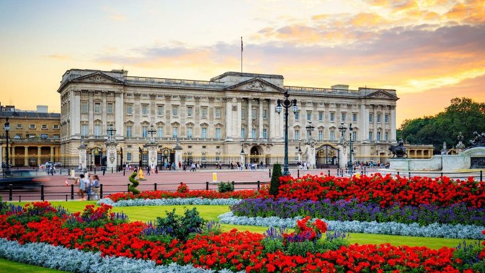

The Crown é uma série que foca na familia real britânica, tendo como principal protagonista a Rainha Elizabeth (Betinha para os intimos, tipo eu!). O ponto turístico a seguir é onde praticamente ocorre toda a história, sendo a principal moradia da monarquia, como ambiente de trabalho até os dias atuais. " Em 2003, um repórter do Daily Mirror passou dois meses no Palácio de Buckingham, como empregado. Uma das referências que havia fornecido estava errada e esta não foi corretamente verificada. O incidente coincidiu com uma visita de George W. Bush ao Reino Unido, o qual ficou instalado no palácio, tendo o Daily Mirror publicado fotografias clandestinas do quarto do presidente norte-americano, juntamente com outras da mesa do pequeno-almoço da rainha e do quarto do Duque de Iorque. O palácio processou o jornal por violação da privacidade, tendo este devolvido as fotografias e pago os prejuízos à rainha em novembro de 2003. " trecho retirado da Wikipedia relata um, dos vários episódios de falha na segurança. Algumas destas falhas de segurança são retratadas na série.
Horário de funcionamento - 10:00 horas às 18:00 horas
Ingressos - Preço por adulto: £ 16,50 e menores de 5 anos de idade a entrada é gratuita
Localização - London SW1A 1AA, Reino Unido
A St Paul's Cathedral (Catedral de São Paulo) é um dos ícones da cidade de Londres e uma das igrejas mais famosas, tem uma importância histórica muito grande. No local, foram celebrados o casamento do Príncipe Charles e da Princesa Diana e o Jubileu de Diamante da Rainha Elizabeth, além de vários outros casamentos e comemorações da monarquia. É de uma arquitetura surpreendente, com início da construção em junho de 1675. A cúpula da catedral é considerada a segunda maior do mundo.
Horário de funcionamento - De segunda a sábado, das 8:30 às 16:30 horas.
Ingressos - Preços por adulto: £ 20, crianças de 6 a 17 anos: £ 8,50
Localização - St. Paul's Churchyard, London EC4M 8AD, Reino Unido